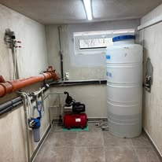
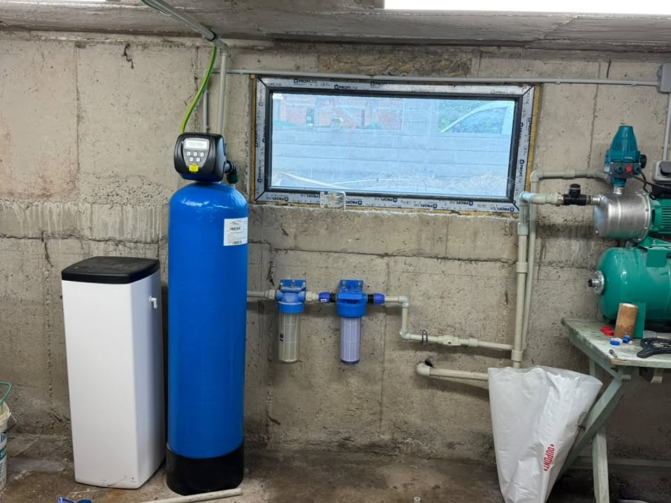

Какъв е обхватът на ВИК услугите
Базирани сме в Костинброд и обслужваме София и София област. Поемаме процеса — от оглед и оферта до монтаж и настройка.
ВИК тук означава локални работи: връзки, арматура, отстраняване на течове и запушвания, санитарни връзки. Ако ви трябва ново дълго трасе от сондаж или улица — това е услугата водопроводни трасета.
Локални ВИК работи: връзки, арматура, течове, запушвания, санитарни връзки.
За ново дълго трасе вижте водопроводни трасета — различни услуги с различна оферта.
- ВИК връзки и монтаж на арматура
- Отстраняване на течове и запушвания
- Санитарни и локални водопроводни връзки
- Координация с помпи и омекотители при нужда
ВИК ремонт — как се оферира
ВИК ремонтите и връзките нямат единна цена — зависи от достъпа и материала. След оглед/описание даваме ясен обхват. Минималното посещение се уточнява по телефона.
Какво не е включено / уточняваме честно: Не изграждаме улични магистрални водопроводи. Не правим аварии „на минутата“ без потвърден слот — обадете се за най-близък час.
Диагностика и ремонт
Оглед
Какъв е проблемът и обхватът.
Оферта
Ясен обхват на ремонта/монтажа.
Изпълнение
Работа на място.
Проверка
Тест и кратко обяснение.
ВИК по населени места
ВИК услуги в София, Костинброд, Сливница, Драгоман, Годеч, Божурище, Своге, Елин Пелин, Банкя и Нови Искър.
Вижте покритието по населени места ↓
От ВИК обекти



Въпроси за ВИК
Какъв е ценовият ориентир за ВИК услуги?
ВИК ремонтите и връзките нямат единна цена — зависи от достъпа и материала. След оглед/описание даваме ясен обхват. Минималното посещение се уточнява по телефона.
Каква е разликата с водопроводни трасета?
ВИК услугите са локални връзки и ремонти. Водопроводните трасета са изграждане на нова тръбна мрежа.
Работите ли извън Костинброд?
Да — София и София област.
Как да се обадя?
0886 391 729
ВИК услуги в София — работите ли?
В София отстраняваме локални течове и връзки в апартаменти — с внимание към съседите. Обадете се на 0886 391 729 за оглед.
ВИК услуги в Костинброд — работите ли?
В Костинброд сме най-бързи за ВИК оглед и ремонт. Обадете се на 0886 391 729 за оглед.
ВИК услуги в Сливница — работите ли?
В Сливница често комбинираме ВИК връзка с помпа или омекотител. Обадете се на 0886 391 729 за оглед.
ВИК услуги в Драгоман — работите ли?
Около Драгоман работим по къщни ВИК проблеми след кратко описание по телефона. Обадете се на 0886 391 729 за оглед.
ВИК услуги в Годеч — работите ли?
За Годеч планираме посещението, за да носим нужната арматура. Обадете се на 0886 391 729 за оглед.
ВИК услуги в Божурище — работите ли?
Божурище — бърз достъп за локални ремонти. Обадете се на 0886 391 729 за оглед.
ВИК услуги в Своге — работите ли?
В Своге отчитаме достъпа до шахти и мазета. Обадете се на 0886 391 729 за оглед.
ВИК услуги в Елин Пелин — работите ли?
Елин Пелин — връзки и ремонти за къщи и малки обекти. Обадете се на 0886 391 729 за оглед.
ВИК услуги в Банкя — работите ли?
В Банкя работим чисто в жилищна среда. Обадете се на 0886 391 729 за оглед.
ВИК услуги в Нови Искър — работите ли?
Нови Искър — дневен слот от Костинброд. Обадете се на 0886 391 729 за оглед.